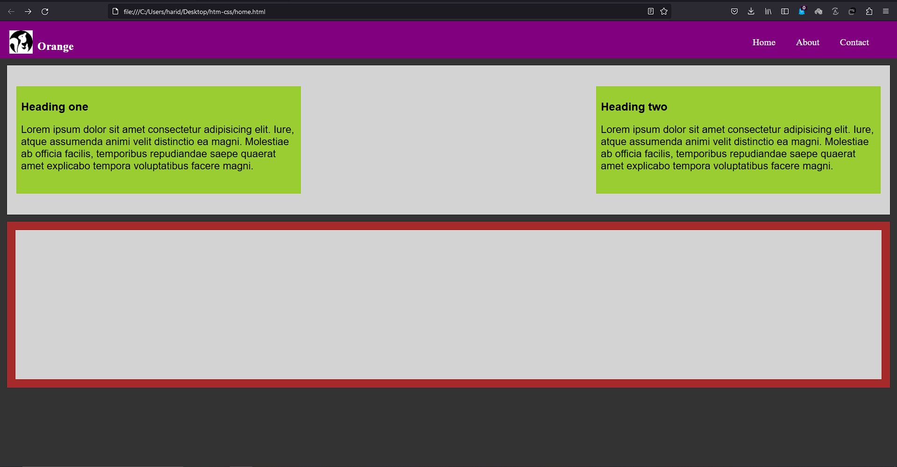
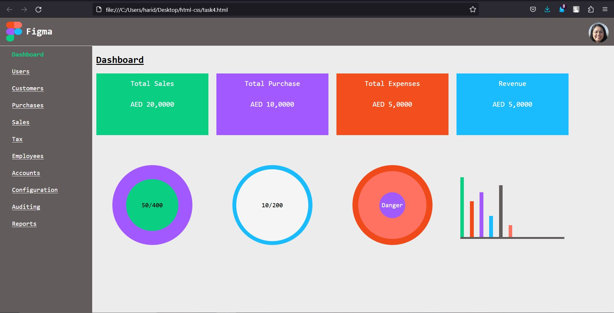

Task 1
Webpage with a navigation bar, a main container and 3 boxes. Made to illustrate the use of flexbox.
Go somewhere

Task 2
Webpage with a navigation bar, a top container with two boxes and a bottom container.
Go somewhere

Task 4
A webpage of an admin dashboard with a navigation bar, a top container with two boxes and a bottom container.
Go somewhere